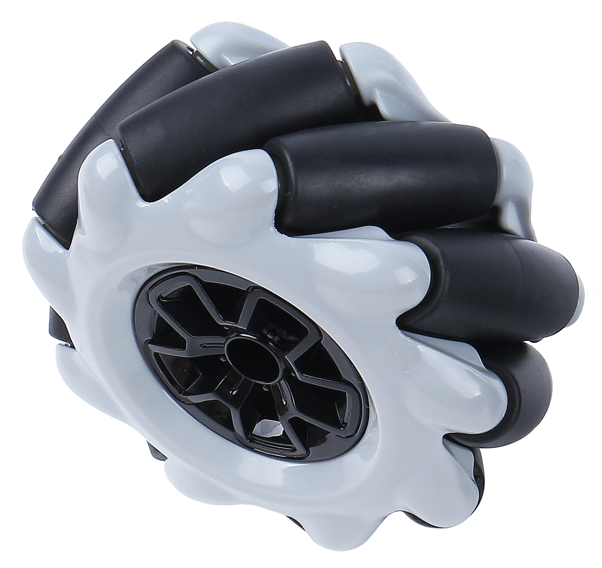
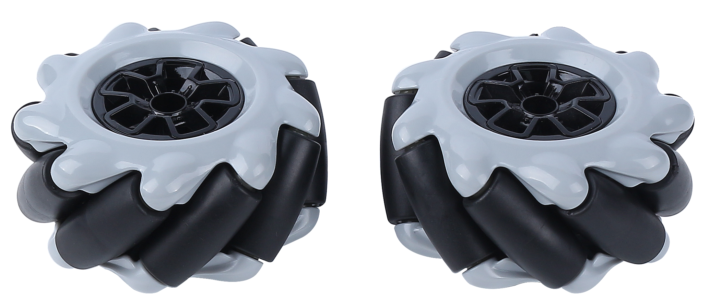
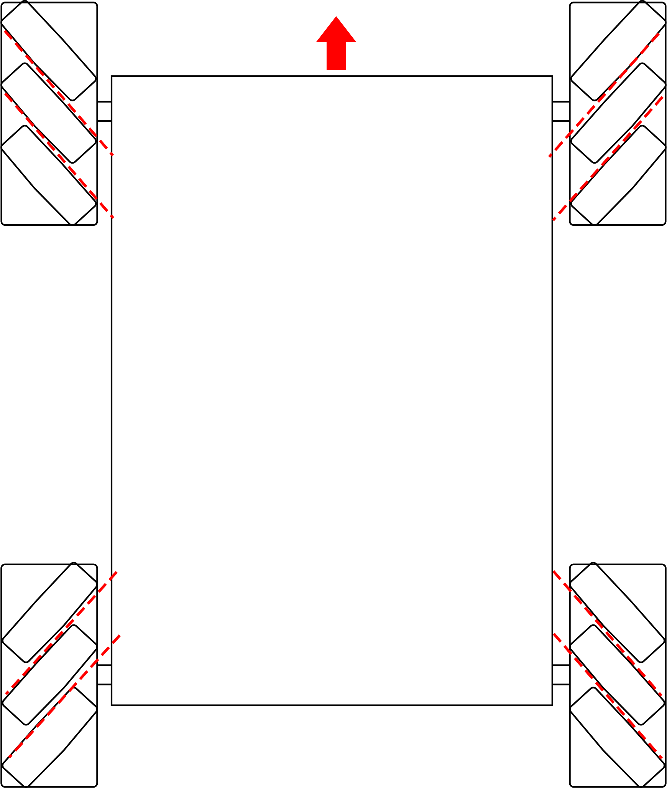

Note
Hallo und willkommen in der SunFounder Raspberry Pi & Arduino & ESP32 Enthusiasten-Gemeinschaft auf Facebook! Tauchen Sie tiefer ein in die Welt von Raspberry Pi, Arduino und ESP32 mit anderen Enthusiasten.
Warum beitreten?
Expertenunterstützung: Lösen Sie Nachverkaufsprobleme und technische Herausforderungen mit Hilfe unserer Gemeinschaft und unseres Teams.
Lernen & Teilen: Tauschen Sie Tipps und Anleitungen aus, um Ihre Fähigkeiten zu verbessern.
Exklusive Vorschauen: Erhalten Sie frühzeitigen Zugang zu neuen Produktankündigungen und exklusiven Einblicken.
Spezialrabatte: Genießen Sie exklusive Rabatte auf unsere neuesten Produkte.
Festliche Aktionen und Gewinnspiele: Nehmen Sie an Gewinnspielen und Feiertagsaktionen teil.
👉 Sind Sie bereit, mit uns zu erkunden und zu erschaffen? Klicken Sie auf [hier] und treten Sie heute bei!
Mecanum-Rad
Was ist ein Mecanum-Rad?
{kind=link}
Das Mecanum-Rad ist ein omnidirektionales Rad-Design, das es einem landgestützten Fahrzeug ermöglicht, sich in jede Richtung zu bewegen. Es wird manchmal auch als schwedisches Rad oder Ilon-Rad nach seinem Erfinder bezeichnet.
Das Mecanum-Rad ist eine Art von radlosen Rädern, mit einer Reihe von gummierten externen Rollen, die schräg an den gesamten Umfang des Rades angebracht sind. Diese Rollen haben typischerweise eine Rotationsachse im 45°-Winkel zur Radfläche und im 45°-Winkel zur Achslinie.
Jedes Mecanum-Rad ist ein unabhängiges, nicht lenkendes Antriebsrad mit eigenem Antriebsstrang. Beim Drehen erzeugt es eine Vortriebskraft senkrecht zur Rollenachse, die in eine längs- und eine quer gerichtete Komponente im Bezug zum Fahrzeug umgewandelt werden kann.
Das Mecanum-Rad kann je nach 45°-Winkel in linke und rechte Räder unterteilt werden, die Spiegelbilder voneinander sind.
Mecanum-Räder werden normalerweise in Gruppen von vier verwendet, wie in der untenstehenden Abbildung gezeigt.
{kind=link}
Merkmale
Durchmesser: 60mm
Dicke: 30,62mm
Rollen: 9 Stück
Winkel: 45°
Farbe: Schwarz
Material: Kunststoff + Gummi